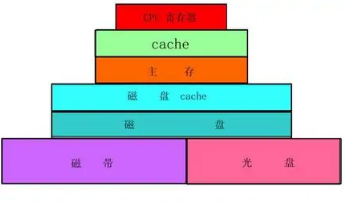
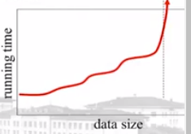
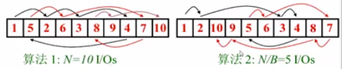

当数据量太大，传统的随机存储模型失效，此时就需要外存算法
外存算法概述
传统的存储模型假设有无限内存（RAM），统一的访问代价，该模型简单易懂。而现代的计算机有复杂的存储层次：

通过多级存储的机制，增大了存储量。较慢的存储层次更加远离CPU。由于磁盘访问速度比内存访问慢了2个数量级，根据局部性原理，为了减少访问次数，数据的传输以块（block）为基本单位来平摊访问代价（每个块8-16字节）。
如今的操作系统大多能通过先进的分页和预取策略优化集中区域数据的访问，但是如果数据访问过于分散，再优秀的操作系统也无法发挥优势。所以，设计外存算法要考虑I/O问题。
传统算法的执行时间往往随着数据量的增长线性增长，但数据量特别大的时候，处理时间会急剧上升。原因是内存不够，虚存会不断访问磁盘，进行swap，造成抖动。

外部存储器模型
- $N$：问题实例数据项个数
- $B$：每个磁盘块中数据项的个数
- $M$：内存能容纳的数据项个数
- $T$：输出数据项个数
- I/O：内存和磁盘之间移动的数据块数
为了方便，我们假设：
$M \gt B^2$
常见内存算法和外存算法的基本界限
评估内存算法性能主要看需要执行对RAM随机访问的次数。由于I/O比内存操作时间多2个数量级，再外存算法中考察内存读写的时间可以忽略不计，因此评估外存算法性能则主要看执行I/O读写块的次数：
| 内存算法 | 外存算法 | |
|---|---|---|
| 浏览 | $N$ | $\frac{N}{B}$ |
| 排序 | $NlogN$ | $\frac{N}{B}log_{\frac{M}{B}} \frac{N}{B}$ |
| 置换 | $N$ | $min \lbrace N,\frac{N}{B} log_{\frac{M}{B}}\frac{N}{B} \rbrace$ |
| 查找 | $log_2 N$ | $log_B N$ |
注意：
- 线性I/O：$O(\frac{N}{B})$
- 置换不是线性的
- 置换和排序范围在所有的实际情况是平等的
- $B$是很重要的因素：$\frac{N}{B} \lt \frac{N}{B} log_{\frac{M}{B}} \frac{N}{B} \lt \lt N$
- 无法用搜索树优化排序（无法保证磁盘上连续存储）
可扩展性问题：块访问的影响
例1：遍历链表
数组大小$N=10$（个元素），磁盘块大小$B=2$（个元素），主存大小$M=4$个元素（2个磁盘块）

一次I/O读入两个元素到主存，对于第一个例子过程如下：# visit 1
load [1,5] # MEM:1,5,_,_
# visit 2
load [2,6] # MEM:1,5,2,6
# visit 3
swap([1,5],[3,8]) # MEM:3,8,2,6
# visit 4
swap([2,6],[9,4]) # MEM:3,8,9,4
# visit 5
swap([3,8],[1,5]) # MEM:1,5,9,4
# visit 6
swap([9,4],[2,6]) # MEM:1,5,2,6
# visit 7
swap([1,5],[7,10]) # MEM:7,10,2,6
# visit 8
swap([2,6],[3,8]) # MEM:7,10,3,8
# visit 9
swap([3,8],[9,4]) # MEM:7,10,9,4
# visit 10
directory_access MEM # MEM:7,10,9,4
算上所有load和swap有9次I/O。对于第二个例子，过程如下：# visit 1
load [1,2] # MEM:1,2,_,_
# visit 2
directory_access MEM # MEM:1,2,_,_
# visit 3
load [3,4] # MEM:1,2,3,4
# visit 4
directory_access MEM # MEM:1,2,3,4
# visit 5
swap([1,2],[5,6]) # MEM:5,6,3,4
# visit 6
directory_access MEM # MEM:5,6,3,4
# visit 7
swap([3,4],[8,7]) # MEM:5,6,8,7
# visit 8
directory_access MEM # MEM:5,6,8,7
# visit 9
swap([5,6],[10,9]) # MEM:10,9,8,7
# visit 10
directory_access MEM # MEM:10,9,8,7
有5次I/O。可见不同的数据对于外存算法执行效率的差异很大。
$N$和$\frac{N}{B}$之间也会因为磁盘块大小$B$的差异而差异较大：
例：$N = 256 \times 10^6$，$B$ = 8000，每次I/O耗时1ms，$N$次I/O需要$256 \times 10^3sec = 71h$，$\frac{N}{B}$次I/O需要$256 \times 10^6 \div 8000 = 32000sec = 8h$
例2：队列和堆栈
队列和堆栈：内存和外存算法都是维护一个push和pop块。每$B$次操作才会触发一次I/O，平均每次操作耗时$O(\frac{1}{B})$
外存排序算法
常规的排序算法以归并排序为例，采用划分区间排序，再归并的策略。外存算法中，把每一个区间放入一个块中，在内存中依次对每一个块排序，然后归并。
$\lt \frac{M}{B}$个排序列表可以在$O(\frac{N}{B})$次I/O内合并。
设数组为：24,1,23,19,20,5,18,16,4,7,8,9,10,15,17,14,3,2,6,11,12,13,22,21。$M=8,N=24,B=2$。第一阶段，以内存最大容量8为一组，分3批读入内存，依次排序后写回：load 24,1,23,19,20,5,18,16
sort_and_write # 1,5,16,18,19,20,23,24
load 4,7,8,9,10,15,17,14
sort_and_write # 4,7,8,9,10,14,15,17
load 3,2,6,11,12,13,22,21
sort_and_write # 2,3,6,11,12,13,21,22
现在3批数据各自排序已经完成：1,5,16,18,19,20,23,24
4,7,8,9,10,14,15,17
2,3,6,11,12,13,21,22
每次取每一批的一块，读入到内存中：1,5
4,7
2,3
内存剩下1块放buffer，第一次比较大小buffer << 1，内存变：5,_
4,7
2,3
buffer(1,_)
第二次比较大小，buffer << 2，内存变为：5,_
4,7
3,_
buffer(1,2)
第三次比较大小，输出1，2，情况buffer，buffer << 3，第3批第一块为空，读入第3批第2块，内存为：5,_
4,7
6,11
buffer(3,_)
以此类推，输出所有值。
I/O复杂度分析：
对于内存大小$M$，数据量$N$，块大小$B$，一次数据遍历需要$\frac{N}{B}$次I/O，一次装满内存需要$\frac{M}{B}$次I/O。